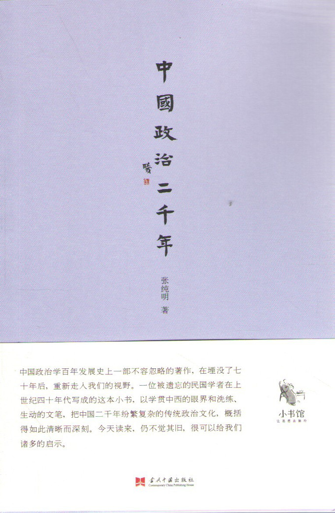

注：【】部分为笔者心得，非原文摘抄。
- 近代文化与古代文化的不同不仅在汽车之有无，而且在社会经济政治的组织与理想。
- 中古的生产方式是以家庭为本位，现代的生产方式是以社会为本位。
- 商业发达的结果是中产阶级的出现，中产阶级的出现即封建社会的崩溃，民族国家的产生，于是整个的政治观念、法律观念都改变了。
- 文艺复兴对于希腊政治哲学、罗马政治组织、法律系统及抽象国家的尊崇之发见的重要性是不可埋没的。
- 儒教的政治哲学是“人存政举，人亡政息”的人治主义。
- 制度是可以从国外借得来的，而观念及道德非自己养成不可。
- 自汉氏兴起以后，天下变成皇帝的私产，二千年来的专制政局可以说真正自此开始。
- 政治的统一必须建筑在经济及交通的基础上。
- 宰相以天下为己任就算目无其君，中国的宰辅制度不能成为一种健全的政治制度的症结就在此。
- 六部的积弊，在于一切案件皆归下僚之任意处理。
- 省本是官署的名称而不是地方区域。明代确定省为最大的地方区域。
- 中国的乡土观念本极浓厚，如果行政区域完全以历史疆界及地理形势为标准，更容易养成偏狭的地方思想。
- 合理化的职权划分必须建筑在合理化的财力分配的基石上。
- 书吏不能革除的原因甚多，其中最重要者为（一）官吏不习政事，不得不假手于此般书蠹；（二）案例过繁，不易稽查，书吏掌管档案，可以上下其手。
- 中国人的旧习惯，据张（君劢）先生的观察，是“勇于私图”、“巧于趋避”、“退有后言”、“恩怨之私”及“通融办法”等。
- 政治风气的改变为政治建设的基本工作。改变政治风气就是改造生活观念。
- 文人的高调，除误国家大事以外，别无作用了。——蒋廷黻
- 人类天生富于保守性，故对于一切变革都要阻遏与反对。
- 在中国的政治上，廉吏竟同凤毛菱角一样的稀罕，亦可见我国政治道德水平之低。
- 官吏待遇薄固然为构成贪污的一个原因，而财政上没有确立的制度，正足以为贪官污吏开方便之门。
- 贪污是一个复杂的问题，而与社会组织、经济环境、民族的道德观念等都有密切的关系。中国的家族制度，使官吏欲廉不得，欲洁不能。
- 人性是脆弱的，生非圣贤，谁能财货当前而不动心。最重要的是制定种种防弊的制度，以养成大公无私的习惯。
- 法律没有舆论的后盾则不能发挥其最大的效能。
- 贪污在中国是一种根深蒂固的习惯，欲挽颓风，非在人事及制度两方面兼程并进，同时努力，不能奏功。
- 中国固有文化的最大的缺点在鄙视物质。鄙视物质的结果是科学之不发达，没有科学的结果是国穷民困，政治的组织不能精密，国家的力量不能充分发挥，统一的理想不能贯彻。
- 加强统一的基础最重要的工作是经济建设。政治统一没有经济的后盾是空虚的，是表面的。
- 国家是不能离开人民的。国家的统一是国家存在的重要条件。
- 中国人民对于政治的趣味脆薄，是因为（一）中国传统的思想就是根本不主张人民对政治发生兴趣。我们的政治哲学是“民可使由之，不可使知之”；（二）中国人民的知识实在是太低；（三）中国的人民太穷。
- 人民对于政治的兴趣即有相当的增高，而仍然没有机会去发挥其兴趣，则有兴趣实与无兴趣等。
- 所谓民主化的政治就是一方面使人民有选举的权利，一方面使其有被选的权利。
- 惟有民治始能使人民对于政治有积极的兴趣，惟有人民对于政治有积极的兴趣，然后统一的基础始能巩固。